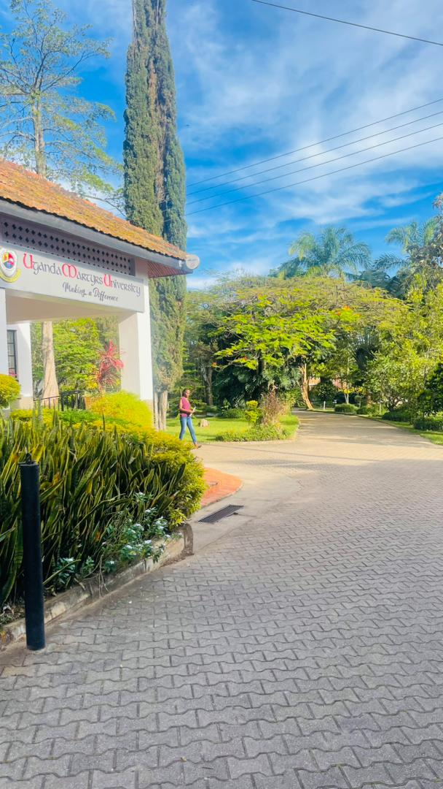
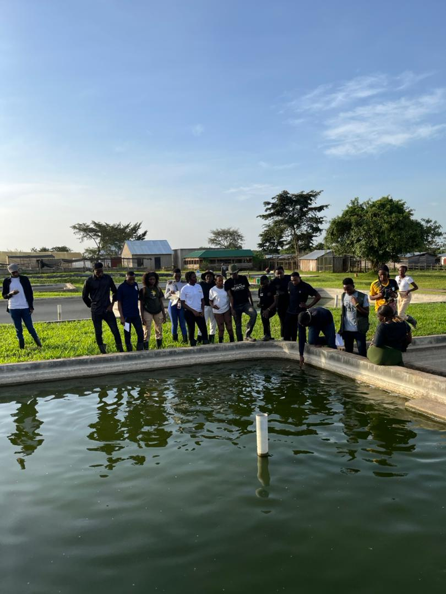
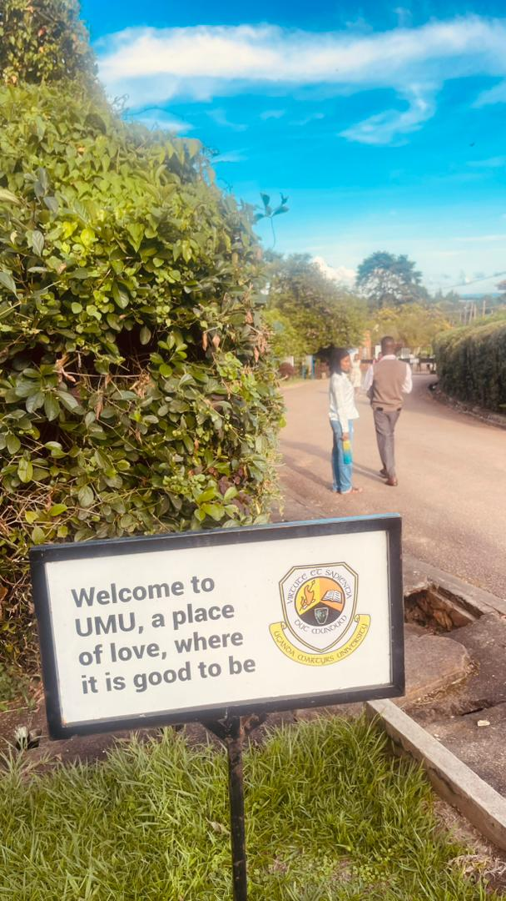
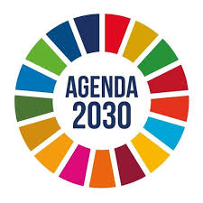
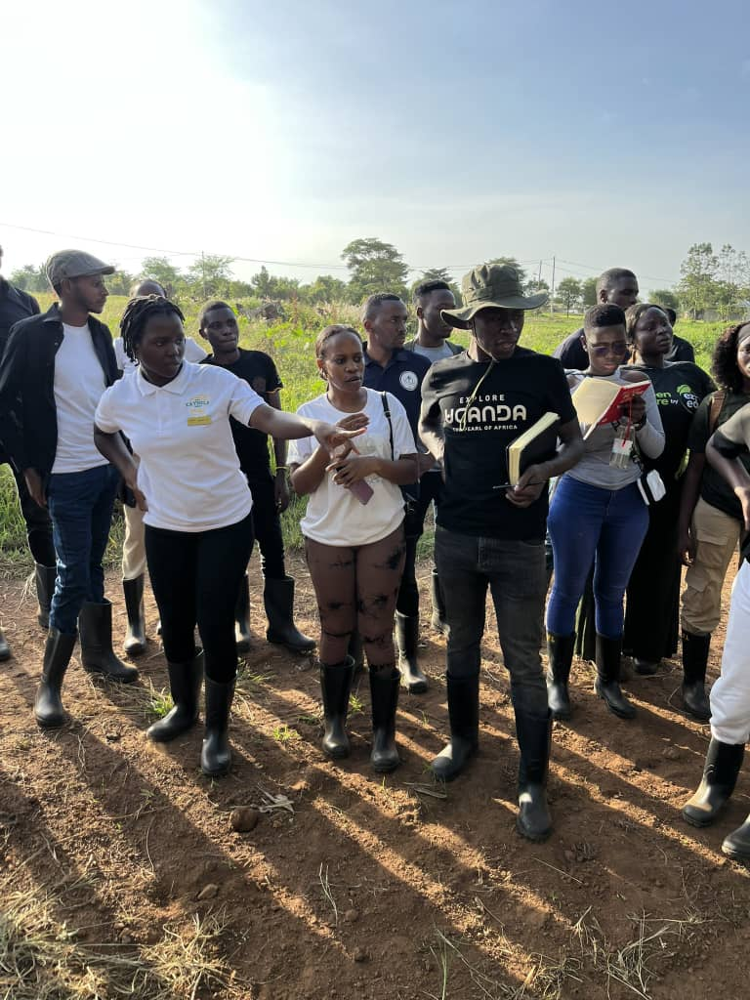
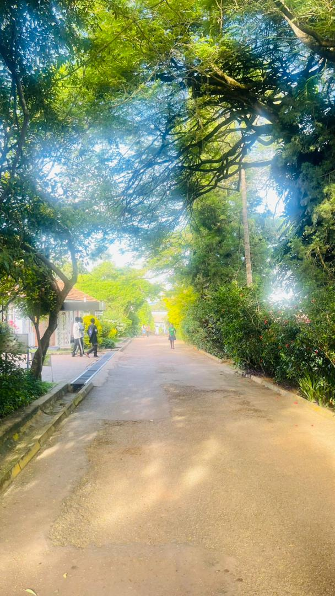
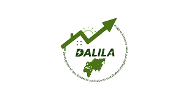

Research, Publications & Impacts
Advancing Education for Sustainable Development through Knowledge and Action

🌱 Green Campus Initiative
Uganda Martyrs University is widely recognised by the NEMA as one of the greenest university campuses in Uganda. The university has implemented tree planting, waste management, solar energy, and rainwater harvesting initiatives.
RCE Greater Masaka actively supports and promotes these efforts as part of its mandate to mainstream Education for Sustainable Development (ESD).
Learn More →
Stewards of the Natural Environmental Resources
Paper by J. M. M. Kamweri (2015) presented at Duquesne University, USA. It highlights the role of faith-based institutions like Uganda Martyrs University and the Association of Religious in Uganda in environmental stewardship and restorative justice.
Read Paper →
Mainstreaming ESD at Uganda Martyrs University
Critical analysis by Jimmy Spire Ssentongo & Aloysius Byaruhanga on how UMU integrates sustainable development into its academic programmes, research, and community engagement.
Access Full Text →SIDA – UMU Partnership
SIDA has supported Uganda Martyrs University through various programmes focused on higher education, research capacity building, and sustainable development. This partnership strengthens RCE Greater Masaka’s work in the region.
SIDA Uganda →Global RCE Roadmap 2021–2030
Official strategic document guiding all RCEs, including Greater Masaka, toward achieving the 2030 Agenda.
Download PDF →
Contributions to RCE 2030 Agenda
RCE Greater Masaka contributes to the global 2030 Agenda for Sustainable Development through local action, education, community engagement, and youth empowerment in the Greater Masaka region.
Learn More →
Student Leadership & Youth Advocacy
Through RCE Greater Masaka, students from Uganda Martyrs University have become spearheaders in advocacy against environmental degradation. Their notable works include the ArcGIS Story on Katonga wetland threats, a Writing Competition to inspire conservation, and active participation in Sustainable Tours and field practicals.
These initiatives continue to drive youth-led conservation in the region.
Follow on X →
Equator Greenbelt Initiative
RCE Greater Masaka is part of the Equator Greenbelt movement that aims to green the Equator line across 13 districts in the Greater Masaka region. The project focuses on planting and preserving indigenous tree species to restore biodiversity and fight climate change.
Follow Progress on X →
DALILA Project
The DALILA Project (Development of New Academic Curricula on Sustainable Energies and Green Economy in Africa) is an EU-funded Erasmus+ initiative aimed at bridging the gap between academia and the labour market in renewable energy and green business.
Uganda Martyrs University is an active partner in this project, with activities spearheaded by RCE Greater Masaka and mainly undertaken at the Fort Portal Campus (Engineering School).
Learn More →📥 Resources & Downloads
Download key documents related to RCE Greater Masaka and our initiatives.